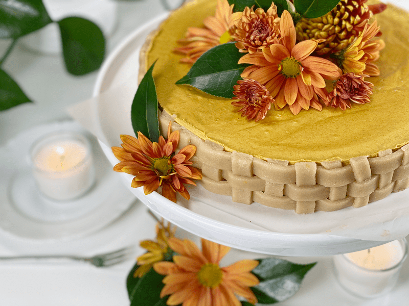
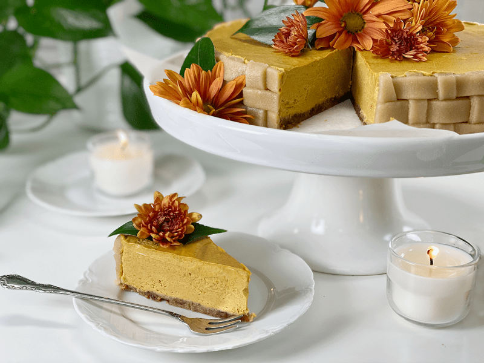
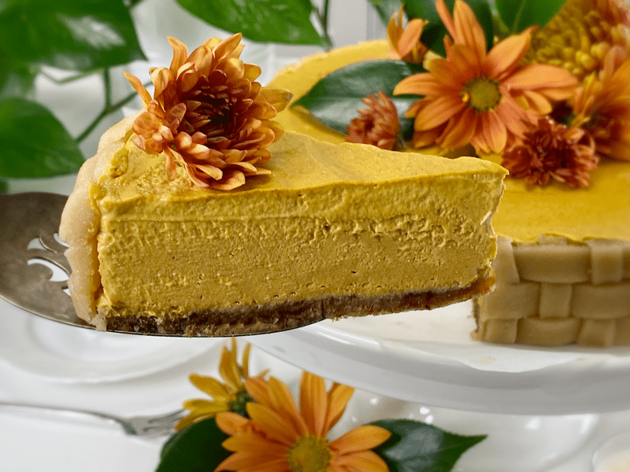
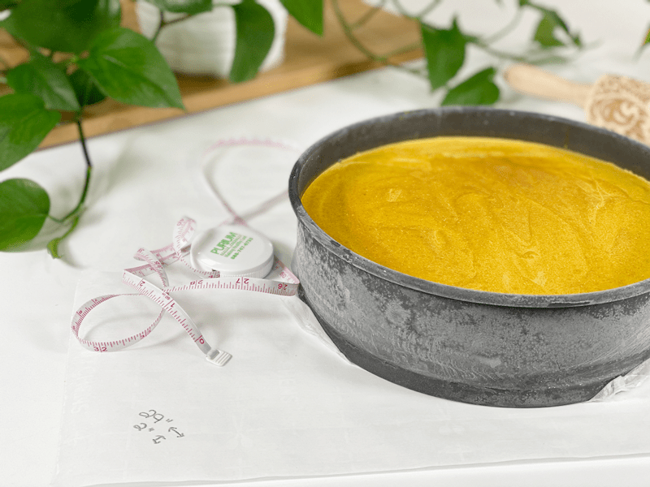
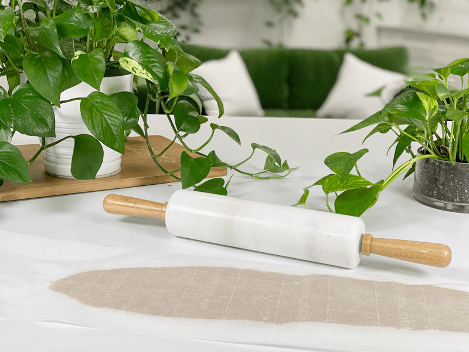
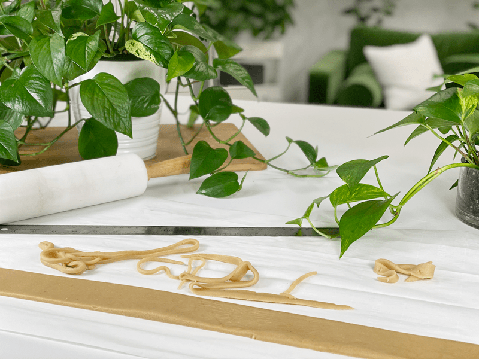
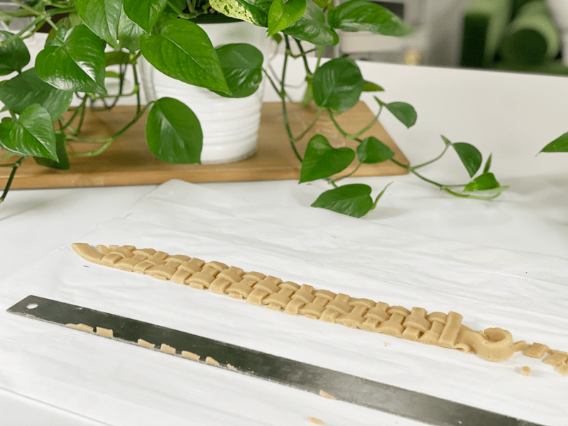
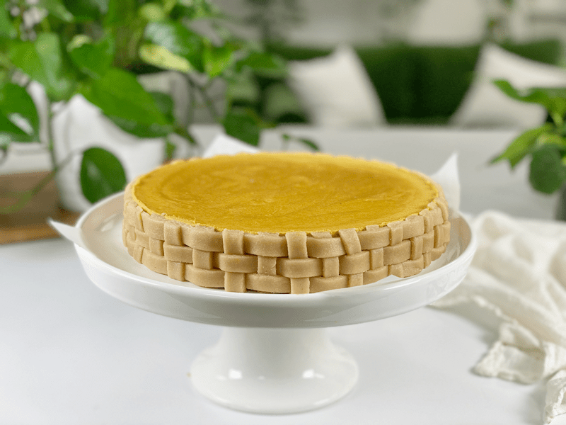
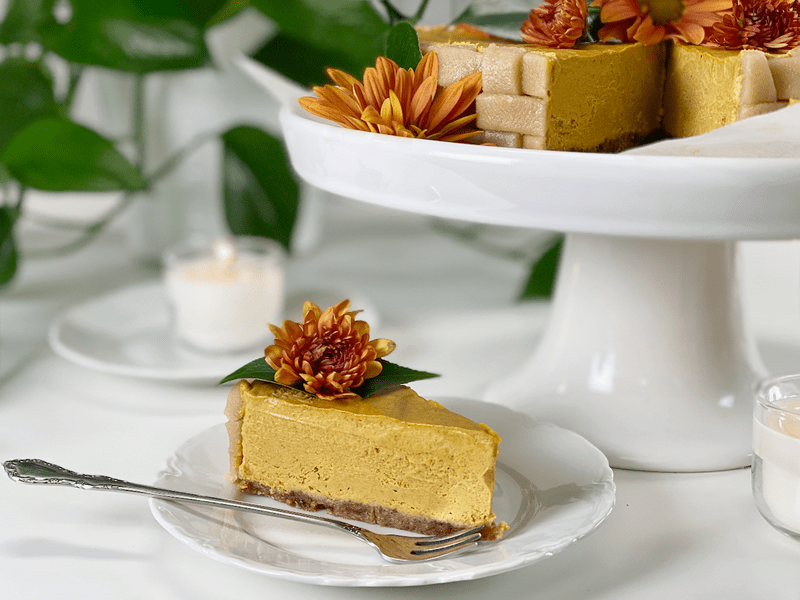

Pumpkin Spice Pie | Cashew-Free
If you could taste autumn, this would be it! I am not fibbing when I say that this raw vegan, gluten-free pumpkin spice pie is amazing! Serve this your guests on Thanksgiving and become the hit of the party. I want to see a show of hands afterward from those of you who tricked their skeptical Uncle Bob into consuming upwards of 3 slices of pie with nothing but praise.

Back when I was in seventh grade, I took a home ec class. I wish I had fond memories of that class; I don’t. I wish that I had learned something useful from that class; I didn’t. I do recall the time when we were going to learn how to make apple pies, though.
Just as all the kids filtered into the class, the power went out. As the teacher left the room to find out what happened, we all made our way to our assigned cooking stations. It wasn’t long before someone spied cans of apple pie filling sitting on the counter.
We waited “patiently” for the teacher to return, but apparently, the patience of a twelve-year-old was pretty short. Because before I knew what was happening, one of the kids opened their can of apple pie filling, and everyone dove in to retrieve a forkful of oooey-gooey apple slices. You know that saying, “monkey see, monkey do?” Well, it wasn’t long before everyone opened their apple-pie cans and devoured them.

The teacher returned, the lights came back on, and the apple pie filling cans were empty. We all just stood there, dumbfounded, with the most pathetic attempted look of innocence on our faces. Needless to say, we didn’t learn how to make apple pies that day. After all, we had eaten the star ingredient! No one got detention and no one was sent to the principal’s office… I mean, really… all 25 of us wouldn’t fit in there, especially with our distended bellies.
What does this story have to do with pumpkin pie? Not much really, but the word “pie” took me down memory lane, reminiscing back to the day when the first pie-making opportunity crossed my path. But it was an opportunity, not an experience . . . since we never got to make them!

Ingredient Run-Down
- Medjool Dates: If the dates you have on hand are tough, dry, or hard… rehydrate in enough warm water to soften them. Once they are done soaking, squeeze out the excess water before adding them to the recipe.
- Pumpkin Puree: You can use raw freshly made puree, or you can use plain canned pumpkin puree. Double-check the ingredient list to make sure there is no added sugar or spices.
- Full-Fat Coconut Milk: You can use freshly made coconut milk from Young Thai coconuts, or you can use canned.
- Coconut Oil: This is the main ingredient that is going to give your pie structure. If you have a high-powered blender, you can use the oil in solid form. If your blender doesn’t have much for guts and glory, melt it first. Either way, the measurement is the same.
 Ingredients:
Ingredients:
Yields 9″ springform pan
Crust:
- 1 1/2 cups raw pecans, soaked & dehydrated
- 1 cup packed Medjool dates, pitted
- 1/2 tsp ground Ceylon cinnamon
- 1/2 tsp sea salt
Filling:
- 1 3/4 cups pumpkin puree, canned or raw
- 1 1/2 cups full-fat Thai coconut milk, canned or raw
- 1 1/2 cups packed Medjool dates, pitted
- 3/4 cup cold-pressed coconut oil
- 1 Tbsp pumpkin pie spice
- 2 Tbsp maple syrup
- 1/2 tsp sea salt
- 2 Tbsp sunflower lecithin powder
Raw marzipan basket weave: optional
- 2 cups fine almond flour
- 6 Tbsp maple syrup
- 1 tsp vanilla or maple extract
Preparation:
Crust:
- Combine the pecans, dates, and cinnamon in your food processor. Mix until well blended.
- Please be sure to not overprocess, or the nuts will release too much oil.
- The batter should stick together when pinched between your fingers.
- If the dates are tough and dry, rehydrate them in warm water first. Be sure to drain and hand-squeeze the excess water before adding the dates to the food processor.
- Press the crust evenly into the pie pan or Springform pan and set aside while you make the filling.
Filling:
- Place the following ingredients in the blender: pumpkin puree, coconut milk, coconut oil, dates, pumpkin spice, maple syrup, and salt. Blend until creamy smooth. I have a Vitamix and used the tamper to get all the ingredients going.
- Slowly add the lecithin while the blender is running, blending just until incorporated. You want to add this last because it is a thickener.
- Pour the mixture into the pan over the crust and tap the pan on the countertop to bring up any bubbles that may be in the filling.
- Place in the freezer overnight so it sets and firms up. Take out and place in the fridge 4-6 hours before serving. This dessert will soften if left at room temp too long. I tested a slice and it was starting to soften after 30 minutes of being at room temp –69 degrees (F) which was the perfect pumpkin pie texture.
- Decorate before serving – if you wish.
Marzipan Basket Weave
- In the food processor, fitted with the “S” blade, combine the almond flour, sweetener, and vanilla. Process until the batter is smooth but be careful that you don’t process it too long… thus creating a nut butter.
- Roll the batter out into a 1/4″ sheet and cut long strips that are about 1/4″ wide. If the dough is rolled too thin it will break when you work with it. If that happens, just gather it back up into a ball and roll it back out.
- Lay 3 strips side by side, snugged up against one another.
- Lift the center strip up to lay a shorted horizontal piece down, return the center strip and now lift the two side pieces so you can lay a horizontal piece, return the side strips back down and repeat the process until you reach the end. I didn’t get pictures of this step… sorry about that, I was lost in learning how to do this and soon found myself in a rhythm. You can Google how to make a piece of basket weave. I couldn’t find what did, but you will understand the concept.
- Gently lift the basketweave strip and wrap it around the pie, pressing it slightly into the pie. I did this in two sections making it easier to handle.
-

-
Measure the diameter and depth of the pie so you know how big you need to make the basket weave.
-

-
Roll the marzipan to 1/4″ thickness between parchment paper so it doesn’t stick to the rolling pin.
-

-
Cut the strips 1/4″ wide, full length.
-

-
Create the weave shape. I used my ruler to trim the excess dough from the edges.
-

-
Gently wrap around the pie, pushing it gently up against the pie. It should stay in place naturally.
-

-
Enjoy!
What type of pumpkin use and how to select a good one:
I recommend “pie” pumpkins, which weigh in at 2 to 5 lbs., with flesh that is firm and sweet. For best flavor and nutrition, look for organically grown sugar pumpkins, a variety known for its excellent sweet flavor and succulent texture. It doesn’t matter how long the pumpkin has been stored, only that the outside is undamaged. Look for smooth, heavy pumpkins that have no cuts or bruises. Most importantly, look for deep, rich orange color, a sign of bioflavonoids, and thus flavor. The stem proves a pumpkin’s quality, so it should be attached.
Some popular varieties:
- Sugar Pie: Small to medium in size with sweet orange flesh. They are called sugar pie pumpkins because they make the best filling for a delicious pie with their high sugar content that gently caramelizes when cooked, releasing a rich, creamy flavor.
- Delicata: Small, white pumpkin with green stripes and yellow flesh. With a dry texture and nutty flavor, it is best in heavily seasoned savory dishes.
- Onion Squash: Orange and oval with a soft flesh that’s perfect for soups and pasta.
- Baby Bear: Small, sweet, and firm with a fine stem, this variety is very versatile and great for either savory or sweet dishes.
- Crown Prince: Blueish-gray pumpkin, perfect for roasting or sautéing.
You can make your pie in the following containers:
- Standard pie pan
- Standard pie pans make beautiful pies but can be more challenging in removing your pie. Nut-based crusts can be a bit more crumbly than your typical baked crusts, so don’t be alarmed by this. It doesn’t affect the taste!
- Springform pan
- Springform pans are by far my favorite pans. I have a fetish for them. I own more than a dozen of them in several different shapes and sizes.
- Using Springform pans makes it very easy to cut your pies and serve them in perfect form.
- Small individual cups/glasses
- There are many great reasons for using these. Small cups make it easy when you are serving large groups of guests. Nobody has to man the pie-cutting post. Your guests can grab and go! Portion control is another good reason. I find that everybody is perfectly satisfied with the amount that they get. These days we are growing very accustomed to eating more substantial portions. But when it comes to raw foods, you tend not to need as much because the nutrients in the ingredients are much more potent, thus satisfying your body much more quickly. Also, raw desserts tend to be rich, and you definitely don’t need as much to be satisfied. Whenever we serve desserts in cups, I always have several people telling me how much they love the individual servings.
© AmieSue.com